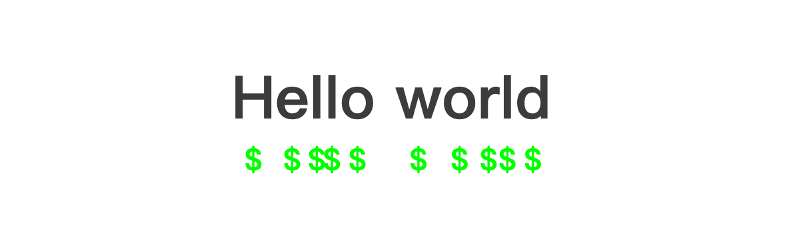
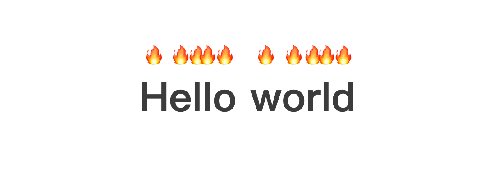

2024-06-16 14:46:55 · YinHao
它被称为文本强调（text-emphasis），是 text-emphasis-* 属性组合的简称，可以为文本添加强调标记。这些标记可用于以各种方式突出显示文本，例如在文本上方或下方添加点、圆、双圆或文本。
下面是一个示例，说明如何使用 text-emphasis 点添加到文本中：
.text-emphasis-dot {
text-emphasis: dot;
}
这将在文本顶部添加一个点，如下所示。
还可以使用如下 text-emphasis 属性向文本添加双圆：
.text-emphasis-double-circle {
text-emphasis: double-circle;
}
您也可以使用字母来强调文本。例如，您可以使用 $ 在文本下方添加美元符号，如下所示：
.text-emphasis-dollar {
text-emphasis: "$" lime;
text-emphasis-position: under;
}
该 text-emphasis-position 属性用于指定强调标记的位置。可以使用 over、 under、 right 或 left 来定位强调标记。
这是它的样子。
您甚至可以使用表情符号来强调文本；例如，您可以使用 🔥 在文本中添加火表情符号，如下所示：
.text-emphasis-fire {
text-emphasis: "🔥";
}
这是它的样子。
